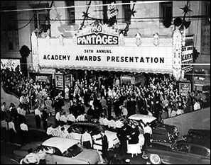

Historia do Oscar
O Oscar é uma premiação de cinema que acontece todos os anos em Los Angeles, nos Estados Unidos. Foi criado pela Ampas, e a primeira cerimônia foi realizada em 1929. A primeira cerimônia teve a presença de 270 pessoas e um ingresso no valor de US$ 5. O surgimento do Oscar teve relação com o processo de expansão que o cinema americano passou no século XX, sobretudo na década de 1920. Naquele momento, grandes nomes do ramo resolveram unir-se para criar uma organização que fosse responsável pela imagem de Hollywood, onde os filmes eram produzidos.
Assim, nasceu a Academia de Artes e Ciências Cinematográficas ou Academy of Motion Picture Arts and Science (Ampas), no inglês. Essa associação foi oficialmente fundada no dia 11 de maio de 1927 e surgiu de uma ideia de um dos chefes da MGM, Louis B. Mayer. Ela teve como primeiro presidente Douglas Fairbanks, um dos principais atores norte-americanos do começo do século XX. Os vencedores de cada categoria são determinados por meio de uma votação, realizada pelos membros da Academia que organizam a premiação. Existem critérios muito bem definidos que determinam quem dos membros pode votar em cada categoria.
